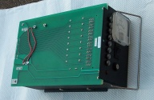
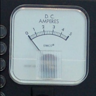

 The power supply that came with the modem case provided, we think, 18 volts AC. (It was really just a transformer.) We needed 5 volts DC, so we set out to modify it. We used a bridge rectifier to turn the AC into pulsating DC, a capacitor to smooth that out, and a 7505 to clamp the voltage to 5 volts.
 We went through a considerable amount of trouble with a metal clamp to cut out a hole large enough for an amp meter. This meter was invaluable when building later boards, because it showed us when we had a short circuit or anything suspicious in our wiring. Normally we hovered around 1 amp, and a short-circuit would peg the meter all the way to the right.
One problem is that the 7505 can only pass about half an amp, and we were not sure that would be enough. Also, Lawrence had made a mistake in his design -- the "ground" that the power supply generated was indeed always 5 volts lower than the power line, but the pair oscillated at 60 Hz between 0/5 volts and -5/0 volts. This worked fine when the Alice II was working in isolation, but when we hooked it up to another computer (through a serial line), the grounds got connected, confusing the PC's serial board.
So we dropped that and just used a regular PC power supply, which gave us more than enough power. We missed the amp meter, and in retrospect we should have added one in series with the PC power supply.